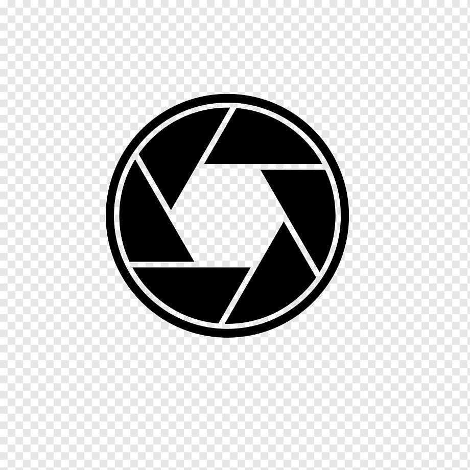
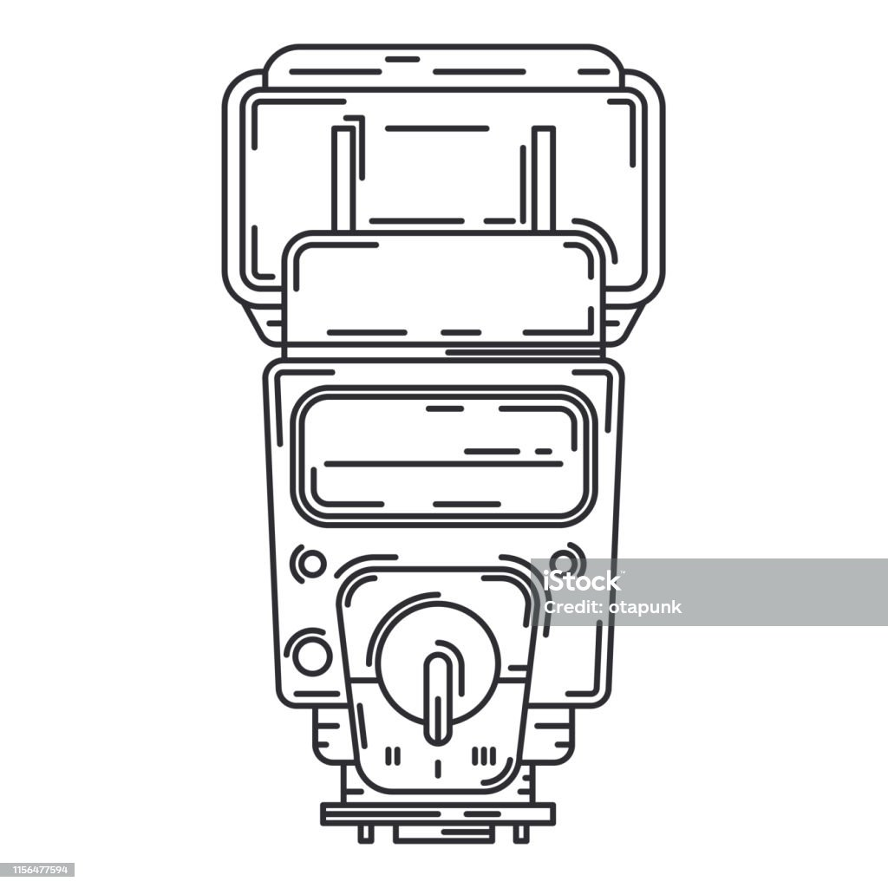

Uma câmera fotográfica é um dispositivo eletrônico ou mecânico que captura imagens estáticas ou em movimento, permitindo que as pessoas registrem momentos, objetos ou paisagens de interesse. As câmeras fotográficas são amplamente utilizadas para a criação de fotografias e vídeos.

Uma lente fotográfica, também conhecida simplesmente como "lente", é um componente óptico fundamental em câmeras fotográficas e de vídeo. Ela desempenha um papel crucial na captura de imagens, pois direciona e foca a luz que entra na câmera no sensor de imagem ou filme, permitindo que uma imagem nítida seja registrada.
Um flash fotográfico, muitas vezes chamado simplesmente de "flash," é um dispositivo usado em fotografia para fornecer uma explosão de luz intensa e instantânea durante o ato de fotografar. Ele é usado para iluminar a cena ou o sujeito da fotografia quando as condições de iluminação existentes não são adequadas para obter uma exposição correta. O flash é uma fonte de luz artificial que permite ao fotógrafo controlar e complementar a iluminação ambiente, ajudando a criar imagens bem expostas e iluminadas de maneira uniforme.
